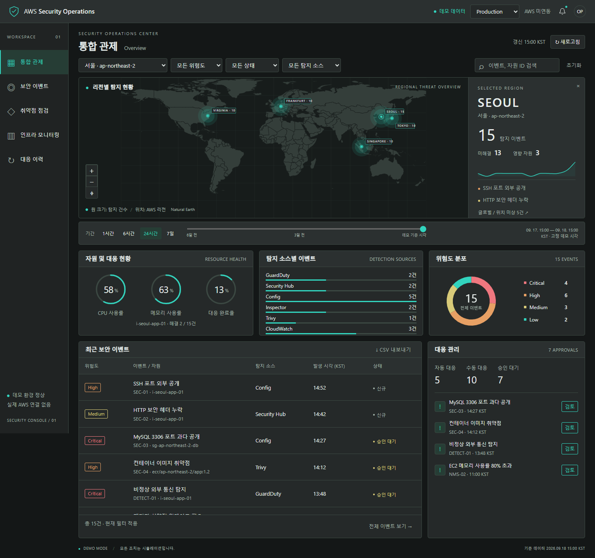
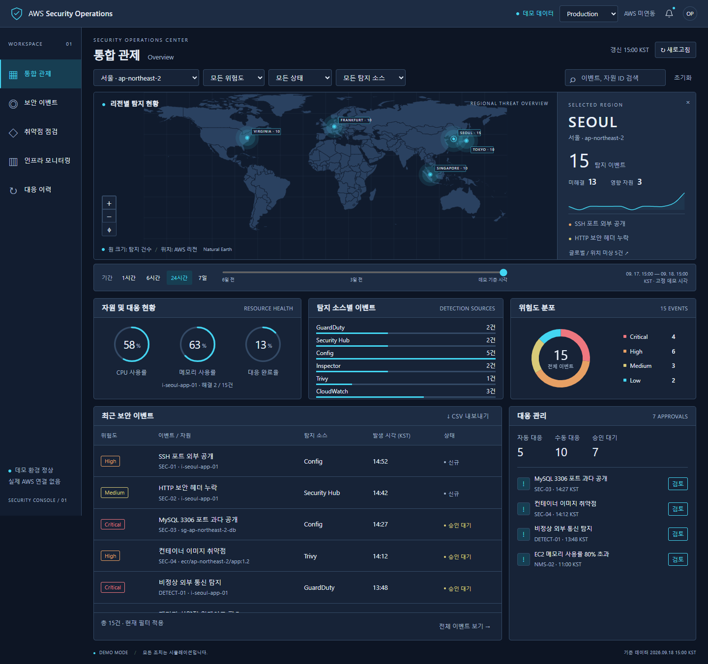
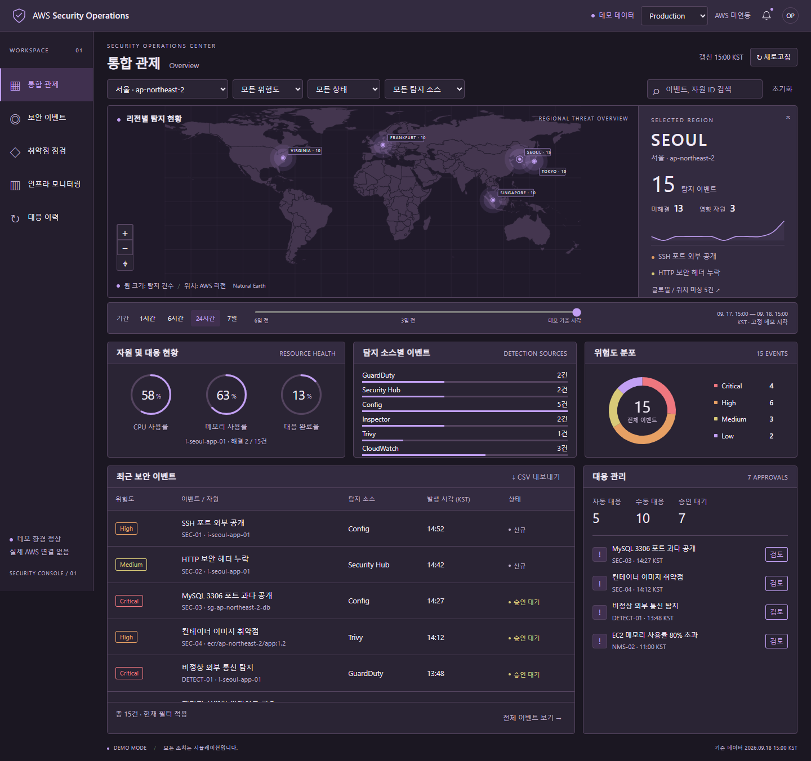
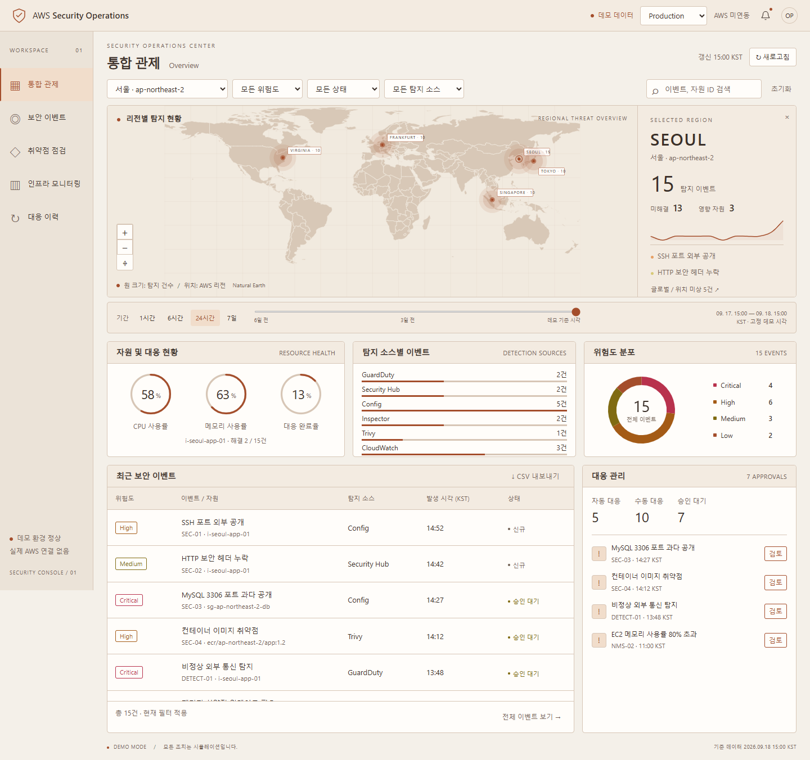
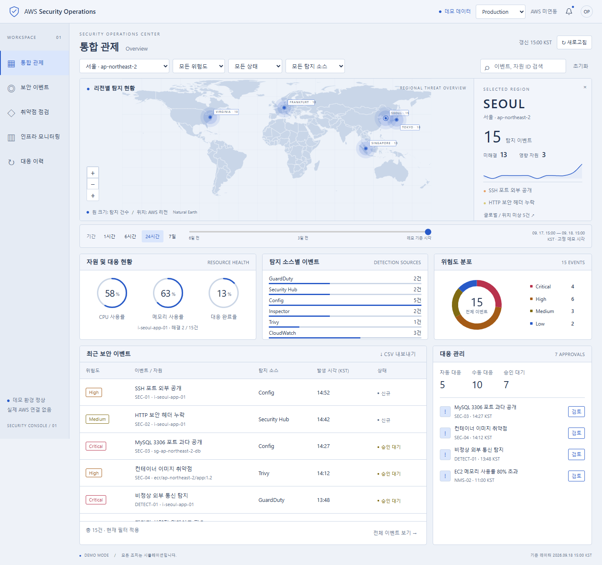
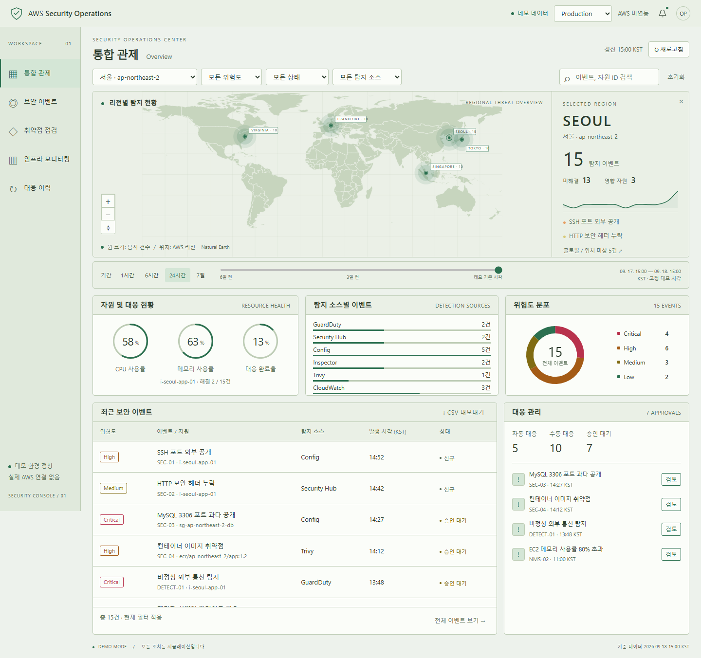
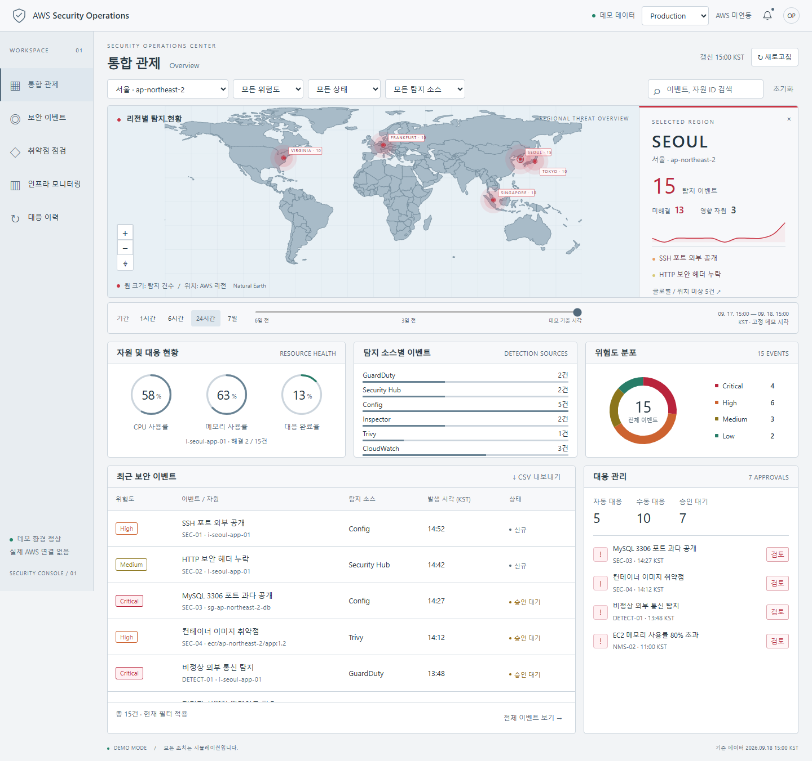

어두운 테마 3개 + 밝은 테마 3개 + 추가 레드 포인트 1개. 동일한 화면·데이터를 사용한 이미지 샘플입니다.현재 v1.0의 코드와 실행 화면은 변경하지 않았습니다. 이미지를 누르면 크게 볼 수 있습니다.
기존 디자인의 연속성 · 절제된 민트 강조

깊은 네이비 · 선명한 네트워크 관제 분위기

차분한 자주빛 배경 · 부드러운 라벤더 강조

따뜻한 아이보리 · 테라코타 포인트

밝은 쿨 그레이 · 또렷한 코발트 블루

옅은 세이지 배경 · 깊은 숲색 포인트

밝은 쿨 화이트 + 선명한 블루 그레이 지도. 위험 위치·탐지 추세·중요 경고에 레드 포인트, 정상 상태는 그린.
